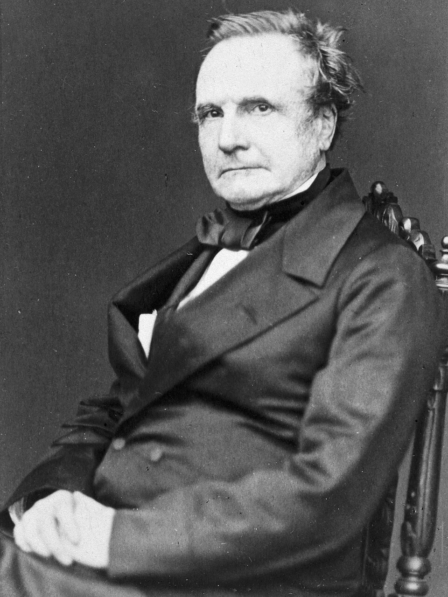

¿Quien fue Charles Babbage?

Charles Babbage fue un matemático y científico británico. Diseñó y desarrolló una calculadora mecánica capaz de calcular tablas de funciones numéricas por el método de diferencias. También diseñó, (pero nunca construyó), la analítica para ejecutar programas de tabulación o computación; por estos inventos se le considera como una de las primeras personas en concebir la idea de lo que hoy llamaríamos una computadora, por lo que se le considera como "El padre de los ordenadores". En el Museo de Ciencias de Londres se exhiben partes de sus mecanismos inconclusos. Parte de su cerebro conservado en formol se exhibe en el Royal College of Surgeons of England. Sito en Londres.
Hay un debate sobre la fecha y lugar de nacimiento de Babbage. En primer lugar, según Dictionary of National Biography seguramente nació en el número 48 de Crosby Row, Walworth en Londres, Inglaterra. En relación con su fecha de nacimiento, The Times publicó que Babbage nació el 26 de diciembre de 1792 pero un sobrino suyo afirmó que fue un año antes, 1791. El registro de la parroquia St. Mary's en Newington establece que Babbage fue bautizado el 6 de enero de 1792, lo cual puede confirmar que hubiese nacido un año antes. Babbage fue el cuarto hijo de Betsy Plumleigh Teape y Benjamin Babbage (Socio banquero del empresario William Praed en fundar Praed9s & Co.) Cuando Babbage tenía 8 años fue enviado a una escuela de día en Alpington para recuperarse de una peligrosa fiebre. Durante un tiempo pudo atender a la escuela de Enrique VI en Totnes, pero su salud le obligó a seguir recibiendo clase de los tutores privados durante un tiempo. Fue después de esto cuando Babbage comenzó a acudir a una Academia en Enfield (Londres), donde las clases se impartían por el reverendo Stephen Freeman. La biblioteca de esta academia incentivó la pasión de Babbage por las matemáticas.
¿Quien es Ada Lovelace?

Augusta Ada King condesa de Lovelace (Londres, 10 de diciembre de 1815, 27 de noviembre de 1852), registrada al nacer como Augusta Ada Byron y conocida habitualmente como Ada Lovelace, fue una matemática y escritora británica, célebre sobre todo por su trabajo acerca de la computadora mecánica de uso general de Charles Babbage, la denominada máquina analítica. Fue la primera en reconocer que la máquina tenía aplicaciones más allá del cálculo puro y en haber publicado lo que se reconoce hoy como el primer algoritmo destinado a ser procesado por una máquina, por lo que se le considera como la primera programadora de ordenadores.
Lovelace fue la única hija legítima del poeta Lord Byron y Anna Isabella Noel Byron. Byron se separó de su esposa un mes después del nacimiento de Ada y dejó Inglaterra para siempre cuatro meses después. Conmemoró la despedida en un poema que comienza: «¿Es tu rostro como el de tu madre, mi bella hija? ¡ADA! Hija única de mi casa y mi corazón». Murió en la Guerra de independencia de Grecia cuando Ada tenía ocho años.
Su posición social y su educación la llevaron a conocer a científicos importantes como Andrew Crosse, sir David Brewster, Charles Wheatstone, Michael Faraday y al novelista Charles Dickens, relaciones que aprovechó para llegar más lejos en su educación. Entre estas relaciones se encuentra Mary Somerville, que fue su tutora durante un tiempo, además de amiga y estímulo intelectual. Ada Byron se refería a sí misma como una científica poetisa y como analista (y metafísica).